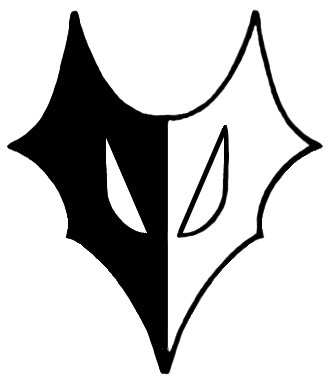
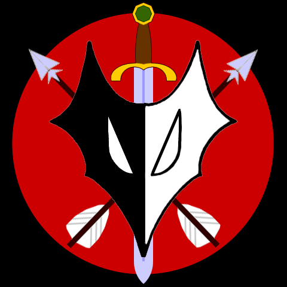

Клубная символика
Командный девиз
Концепция и смысл нашего клуба очень точно передается в нашем девизе:
Suliss lueth Olist alur, taga Z'ress lueth Streeaka
Изящество и Хитрость лучше, чем Сила и Безрассудство
То есть мы не лезем в гущу боя, не геройствуем зазря, и не рискуем своими жизнями и здоровьем ради непонятно чего.
Мы привыкли достигать своих целей любыми методами (пусть даже изредка жестокими или подлыми), но при этом так, чтобы это было ловко, хитро и без особых напрягов. Мы склонны оставлять грандиозные разборки тяжелой пехоте, а самим действовать из-под тишка. Довольно часто мы выступаем как артиллерийская поддержка латников, копейщиков и мечников (с которыми заключили выгодный для нас союз), но, как правило, открыто в бой мы не вступаем (да и зачем, если толку от стрелка в ближнем бою мало?)
Малый и Большой герб Вэльдрина
Королевство Вэльдрин, как и любое нормальное королевство, имеет свою проработанную символику, свои знаки отличия.
Главными нашими символами являются наши гербы, которых у нас два - Малый Герб Вэльдрина и Большой Герб Вэльдрина.
Малый герб был разработан в 2002 году, когда команда Вэльдрин обрела свое название, свою концепцию и свою миссию.
Большой Герб был разработан несколько позже, и представляет собой сочетание Малого Герба и некоторых геральдических символов, описывающих частично концепцию команды, частично историю Королевства.
Но обо всем по порядку.
Малый Герб Вэльдрина

Малый Герб Вэльдрина, также называемый "двухцветной лисой", представляет собой символическое изображение черно-белой лисы.
Лиса, как символ ловкости и хитрости, передает смысл нашего девиза - Изящество и Хитрость лучше, чем Сила и Безрассудство.
Фактически, на гербе изображена не одна, а две лисы, которые в борьбе мордами уперлись друг в друга. Это символизирует внутреннюю борьбу всех добрых дроу, которые, будучи по сути созданиями тьмы, находят в себе силы бороться с темной натурой и служить Свету.
Левая половина (лиса) черного цвета, правая белого. Важным моментом является то, что глаза у обоих лис белые.
Используется для обрамления бланков, турнирных таблиц, визиток и т.п. официальных документов. По сути является основным символом Вэльдрина.
Повсеместно используется жителями Королевства для украшения доспехов, оружия и аксессуаров.
Большой Герб Вэльдрина

Большой Герб Вэльдрина представляет из себя красный диск, размещенный на черном фоне, на котором расположены две перекрещенные стрелы, меч и Малый Герб Вэльдрина.
Черный фон с красным диском символизирует кроваво-красную луну. Согласно легенде Вэльдрина, когда основатели Королевства вышли на поверхность, произошла ужасающая по своей жестокости стычка со злыми дроу, которые преследовали беглецов-отступников. Было пролито так много крови, что казалось, будто даже луна окрасилась в багровый цвет.
Перекрещенные стрелы указывают на основное оружие Королевства Вэльдрин – стрелковое.
Стрелы направлены наконечниками вверх, что указывает на силу и решительность в использовании военных средств.
Меч является одним из символов нашей богини Эилистраи, и направлен лезвием вниз, что характеризует наше сдержанное отношение к оружию ближнего боя.
Ну и венчает все Малый Герб Вэльдрина, описанный выше.
По сути, Большой Герб Вэльдрина используется достаточно редко, и в основном изображен на командной штандарте.